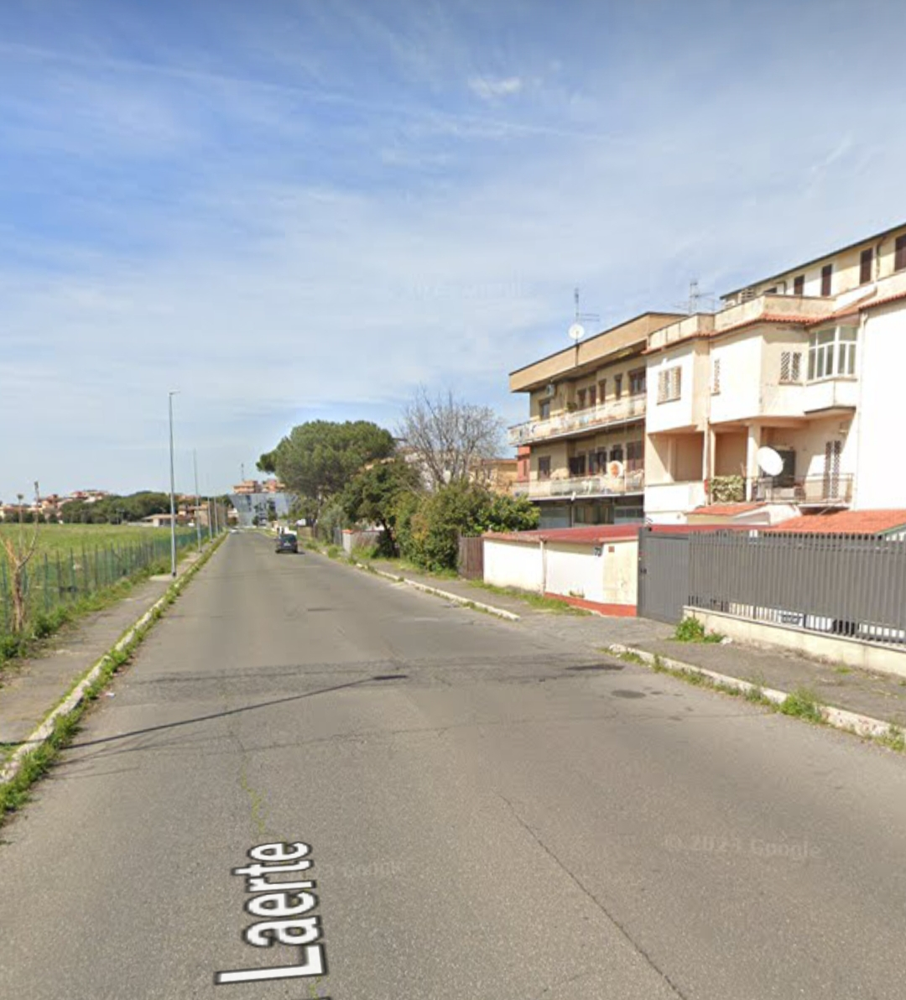
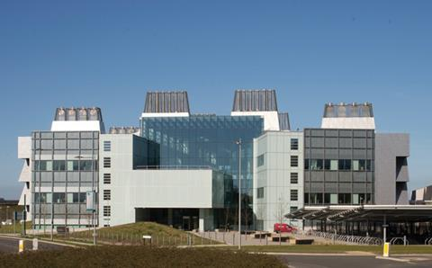

Roma, 15 Ottobre 2023 Torre Angela, Roma –Un'escalation di violenza ha scosso la periferia romana di Torre Angela, dove in passato si erano verificati scontri tra manifestanti e forze dell'ordine per gli sgomberi delle case popolari e Acer, destinate a ospitare i laboratori della BioTechGenix. La multinazionale italiana, leader nel settore biotecnologico, è accusata da alcuni residenti locali, che hanno chiesto l'anonimato per timore di ritorsioni, di aver mandato i suoi agenti di sicurezza a intimidire e persino a irrompere nelle loro abitazioni durante la notte. Alcune vittime hanno denunciato di essere state aggredite fisicamente e verbalmente, creando un clima di terrore e incertezza nella comunità. Secondo le testimonianze raccolte, si tratterebbe di un tentativo disperato della BioTechGenix di liberarsi degli ultimi ostacoli che frenano il completamento del suo progetto originale, approvato dalla regione con molte polemiche. Mentre si attendono le indagini delle autorità competenti, la verità resta ancora oscura, ma una cosa è chiara: Torre Angela è in fermento. Per capire meglio la situazione, bisogna ricordare che all'inizio dell'anno ci furono violenti scontri tra i manifestanti contrari al progetto e la polizia, intervenuta in assetto antisommossa per difendere i dipendenti e le guardie della BioTechGenix, assaltati da gruppi armati di spranghe e altri oggetti contundenti. Si sospetta che tra gli aggressori ci fossero anche alcuni abitanti del quartiere, complicando ulteriormente il quadro. La comunità di Torre Angela vive in apprensione, sperando di ritrovare presto la tranquillità nella sua piccola oasi romana. La situazione è fluida e noi seguiremo da vicino gli sviluppi, inviando i nostri inviati sul posto per fornire maggiori dettagli e approfondimenti.
 